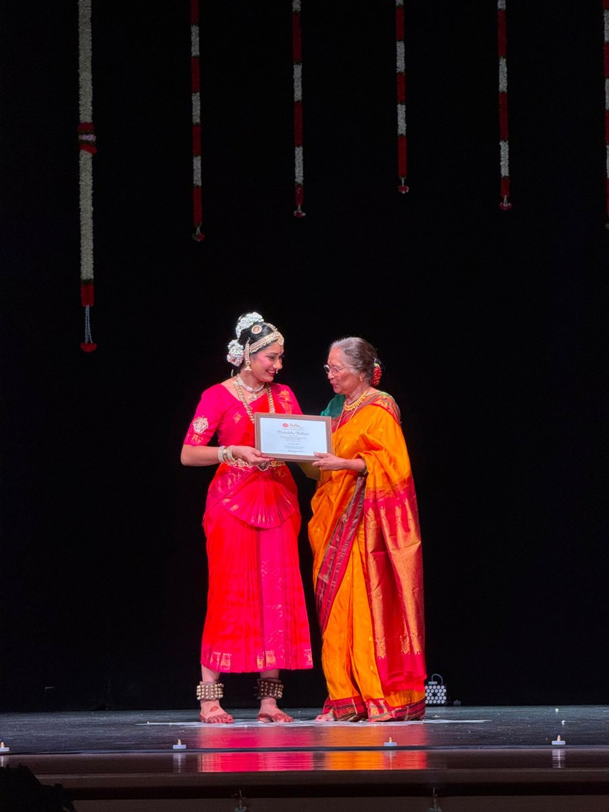

“A dissection based study of female cadavers suggests that current anatomy texts do not accurately display female perineal anatomy.”
— O'Connell et al., Journal of Urology, 1998

When Helen O'Connell dissected female cadavers in 1998, she found that the clitoral erectile tissue projects three to six centimeters beyond where anatomy texts had placed it. Because a structure this large went unmapped until only 28 years ago, I began to ask what else in female anatomy remains undescribed, and this question is what draws me to reproductive health research. Endometriosis affects roughly 11% of women, yet in 2022 it received about $27 million of a $45 billion NIH budget. Scarring inside the uterus can prevent an embryo from implanting, and the standard treatment removes the scar without restoring the tissue. Each of these gaps persists because the underlying biology was never measured closely enough to design around, which means that new anatomical and cellular findings carry the potential solutions that have not yet been built.
Biomedical engineering is where I can use my skillset to turn these statistics into devices that act as interventions. Once researchers know how a drug moves through a tissue, they can design an implant that releases it at a set rate for months instead of a day. That same logic explains my interest in male contraception. No reversible method exists for men beyond condoms, and candidates now in early clinical trials suppress sperm production without altering hormones. Because contraception currently places nearly all physiological risk on one partner, a working male method would redistribute that risk rather than add another option.

In addition to reproductive health, my cousin's birth exposed me to maternal and child health, specifically neonatal care. During her birth, a problem with the umbilical cord restricted the oxygen from reaching the brain, causing cerebral palsy. Growing up with her, I watched her milk monitor, went to physical therapy with her, and challenged her with mathematical games. These experiences prompted me to wonder how an oxygen deprivation lasting 6 minutes at birth can produce lifelong changes in neurological development. At UNC, I hope to explore these questions through Biomedical Engineering and research involving reproductive, maternal, and fetal medicine. Research methods interest me because they determine whether a finding can be used. In an exercise and sport science lab, I ran ELISAs to measure hormones such as insulin and aldosterone and collected cardiovascular data from more than 300 participants. Learning how a protocol controls for confounding variables showed me why some results support an intervention and others cannot. A finding only reaches a patient after someone interprets its implications and builds a policy or a device around it, so I treat interpretation as the part of research that produces public benefit.

Working as a certified nursing assistant taught me that the device and the patient meet in the same room. With Alzheimer’s and dementia patients, how long I took to listen before a task changed whether a patient let me complete it. Because adherence depends on what a person can tolerate daily, I plan to carry that observation into obstetrics and gynecology, where I want to treat patients while testing whether the technologies I help develop fit the lives of the people using them.
This was a turning point in my interest to pursue medicine because it informed me about problem-solving with both knowledge and care.

Thirteen years of Bharatanatyam prepared me for the pace of that work. The form is built on fixed rules and repetition, so progress arrives slowly and unevenly; a movement I practiced for months often improved only after I stopped expecting it to. Training under those constraints taught me to keep working on a problem that does not yield quickly, which is the same discipline that research and clinical training require.